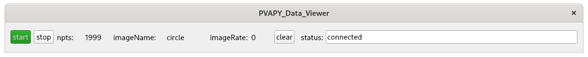

Introduction
This document describes a Python Image Viewer that monitors data from a PVRecord. Other python clients create 2d curves and issue channelPuts to the PVRecord
When the viewer is started the following appears:
When start is clicked the following appears:

See index For installation instructions.
After installation you are ready the run the example, which is located in directory testPython/mandelbrot
plot2dcurves
Python code
Go to testPython/plot2dcurve and you will see the following files:
- PVAPY_Dynamic_Viewer.py and P4P_Dynamic_Viewer.py
-
You will normally start one of these as follows:
python PVAPY_Dynamic_Viewer.py
One uses pvapy and the other uses p4p for communication with the IOC. - PVAPYaddDynamicRecord.py and P4PaddDynamicRecord.py
- One of these must be run in order to create the PVRecord required
by this application. For example:
python PVAPYaddDynamicRecord.py
Again one uses pvapy and the other uses p4p for communication with the IOC. - PVAPYgenerateCurve.py and P4PgenerateCurve.py
- Either of these can be used to generate a 2d curve. See below for details.
Starting a Viewer
The following:
python PVAPY_Dynamic_Viewer.py
displays the following viewer:
Creating record TPY_2dcurve
The following creates the PVRecord required by this application.
python PVAPYaddDynamicRecord.pyAt this point you can click start on the viewer window. A blank image will appear until you run a curve generation program.
Curve generation
The following
mrk> python PVAPYgenerateCurve.py
argument must be one of: ('line', 'circle', 'ellipse', 'clover', 'heart', 'lissajous', 'figureight')
mrk> python PVAPYgenerateCurve.py circle
name= circle xmin= -1.0 xmax= 1.0 ymin= -1.0 ymax= 1.0
putrate= 468 per second
mrk>
Generates a circle. You should now see the folllowing image:

If you look at the image while PVAPYgenerateCurve is running you will see the curve being dynamically created.
Now try generarating some of the other 2d curves.
Brief Code Description
Dynamic_Common.py
This has the following:
def getDynamicRecordName()
def getAddRecordName()
class DynamicRecordData(object)
def computeLimits(self)
class Dynamic_Channel_Provider(object)
- getDynamicRecordName
- This gets the name of the record that holds the image data. The default is 'TPY_2dcurve'. An environment variable PLOT2DCURVE_RECORDNAME overrides the default.
- getAddRecordName
- This gets the name of a record that adds new records in the same PVDatabase. The default is TPYaddRecord. An environment variable ADD_RECORDNAME overrides the default.
- DynamicRecordData
- This describes the data in a dynamicRecord. It has the following fields: name,x,y,xmin,xmax,ymin,ymax. name is a string, x and y are double array,all other fields have type double. computeLimits computes xmin,xmax,ymin,and ymax.
- Dynamic_Channel_Provider
- This describes methods that P4P_Dynamic_Viewer and PVAPY_Dynamic_Viewer must implement.
GenerateCurve.py
This is the code that generates the x and y arrays for an image. It is called by P4PgenerateCurve and PVAPYgenerateCurve. It can also be called directly by python. In order to generate a curve, it requires an argument that is the name of the curve. Note that some of the code allows additional arguments. Look at the code for details.
Dynamic_Viewer.py
This is the code that provides the user interface and code that dynamically generates images.
P4PaddDynamicRecord.py and PVAPYaddDynamicRecord.py
This is code that creates a dynamicRecord.
The record has the following structure
mrk> pvinfo TPY_2dcurve
TPY_2dcurve
Server: 10.0.0.11:5075
Type:
structure
string name
double[] x
double[] y
double xmin
double xmax
double ymin
double ymax
P4P_Dynamic_Viewer.py and PVAPY_Dynamic_Viewer.py
This is code that:
- creates an instance of Dynamic_Channel_Provider
- creates an instance of Dynamic_Viewer
- connects to a dynamicRecord
- monitors the dynamicRecord and passes each monitor event to Dynamic_Viewer
P4PgenerateCurve.py and PVAPYgenerateCurve.py
This is code that:
- calls GenerateCurve
- connects to dynamicRecord
- Issues puts to dynamicRecord stating with a single x,y point, adding a new points, etc. This continues until all points have been sent
The code than terminates.